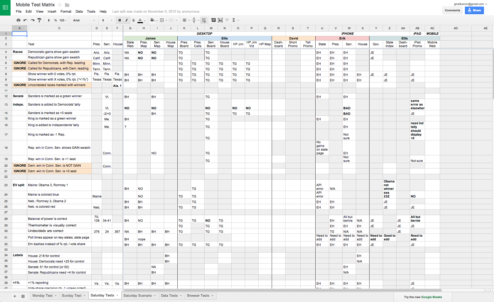
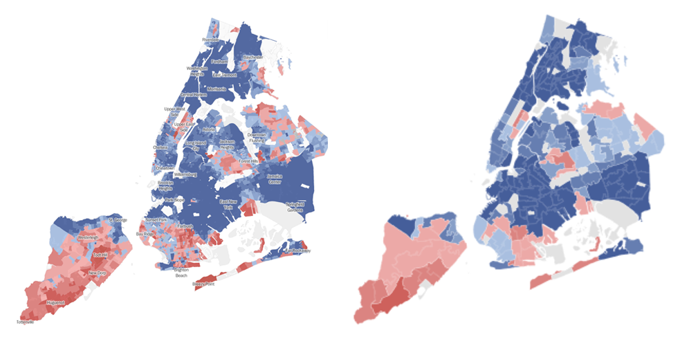

Responsive Design
Tom Giratikanon
@giratikanon
February 27, 2014
Q: “What about mobile?”
A: “Responsive Design”
Responsive design just means that one site works reasonably well on every device.
It's a way of helping people read your stories.
Half of Our Visits Are From Mobile Devices
Responsive Design at
The New York Times
(We're just starting to do it too.)
Times Apps
- Website
- iPhone
- iPad
- Android
- Kindle
- Windows Phone
- BlackBerry
- Mobile Web
- Today's Paper
- ...
And on the Phone...
Challenges
Election 2012 Results
Designing All Those Pages
Testing All Those Devices
And on the Phone...
Thinking Responsively
Mobile First
It makes you prioritize. It's faster. It's simpler. And it'll always work on desktop.
... or Desktop First
More appropriate for graphics or individual stories.
Don't Just Shuffle Your Content
Elements of A Sample Graphic
|
Desktop
|
Phone
|
Speed
On mobile, you can't load everything.
2013 N.Y.C. Mayoral Election
Coding Responsively
Coding Responsively
- By default, most HTML is responsive.
- It just needs a little help.
A Simple Page
Making Sure Your Website Is Ready for Smartphones

By EILENE ZIMMERMAN
January 8, 2014
About half of all mobile searches — those done on a smartphone or on a tablet — have “local intent,” meaning the person searching is looking for a nearby business. That number has risen sharply over the last five years, said Todd Leeloy, general manager of OrangeSoda, a digital marketing company in American Fork, Utah, that was bought by Deluxe in 2012.
Responsive Frameworks
There is starter code, like Bootstrap, that does much of this for you
— as long as you understand the concepts.
That's It!
Questions?